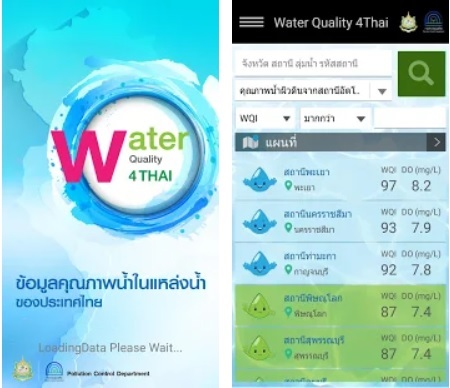
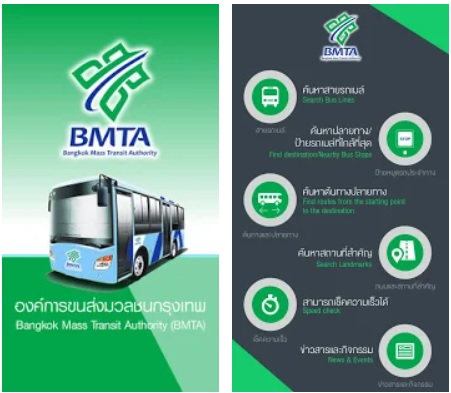

Thai Water Quality(TWQ)
Water Quality for Thai mobile application is intended for presenting Thailand’s water quality information gathered by Pollution Control Department Thai Water Quality app use for report the Thailand water quality information. You can view Surface Water Quality from Automatic Stations, Surface Water Quality from Manual Sampling and Marine Water Quality from Manual Sampling.
- Function :
Download

Bangkok Mass Transit Authority(BMTA)
App Search for bus lane. A function of many applications. That allows users to find a path to travel.
- Its main function is as follows: